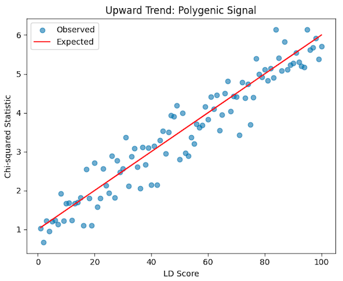
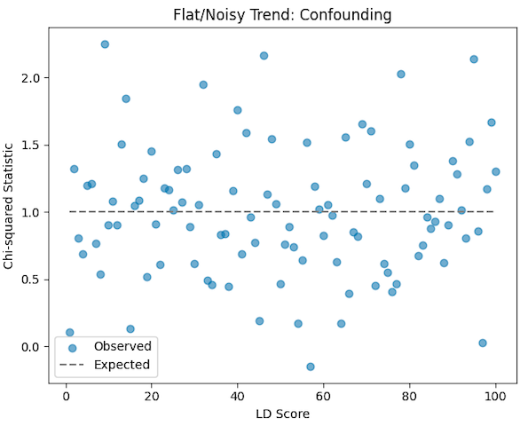

Beyond QC: A Practical Guide to GWAS with SAIGE
A hands-on guide for performing GWAS after preliminary QC, covering phenotype preparation, and association testing using SAIGE.
Introduction
Genome-wide association studies (GWAS) are powerful tools for uncovering genetic variants linked to traits and diseases. After preliminary quality control (QC), additional checks and thoughtful modeling are essential—especially when dealing with related individuals and population structure.
This guide walks through:
- Post-QC checks
- Phenotype and covariate preparation
- GWAS using SAIGE
- Alternatives to SAIGE
- Visualization and interpretation
What You’ve Received
Before diving into the analysis, ensure you have:
- Genotype data (after basic QC)
- Phenotype file
- Covariates including PC1–PC20
- Related individuals in the cohort
Post-QC Checks
1. Sample Matching
Ensure sample IDs match across genotype and phenotype files.
comm -12 <(cut -f1 phenotype.txt | sort) <(cut -f1 genotype.fam | sort) > common_ids.txt2. Sex Check
comm -12 <(cut -f1 phenotype.txt | sort) <(cut -f1 genotype.fam | sort) > common_ids.txt3. Population Stratification
You already have PC1–PC20, so no need to compute PCA again. Just include these as covariates in your model.
GWAS with SAIGE
Why Choose SAIGE?
SAIGE is particularly well-suited for complex datasets because it:
- Handles case-control imbalance effectively
- Accounts for relatedness using a sparse GRM
- Scales to large datasets efficiently
- Supports both binary and quantitative traits
Conducting GWAS with SAIGE
You can follow the comprehensive guide to perform GWAS from their well-documented page.
Alternatives to SAIGE
Depending on your specific needs, consider these alternatives:
| Tool | Best For | Notes |
|---|---|---|
| PLINK | Small datasets, basic GWAS | Fast, but doesn’t handle relatedness |
| GEMMA | Mixed models, quantitative traits | Handles relatedness well |
| BOLT-LMM | Large-scale quantitative traits | Fast, limited binary trait support |
| REGENIE | Binary and quantitative traits | Scalable, supports stepwise modeling |
Output Expectations
After running your GWAS, you should expect:
- GWAS results: SNP ID, effect size, SE, p-value
- Manhattan plot and QQ plot for visualization
- Additional visualizations: Regional plots, volcano plots, etc.
Creating Manhattan Plots
There are several online resources that input summary statistics and output Manhattan plots.
Personally, I opted for an in-house developed modified version of an R package used by research groups in the department.
library(qqman)
gwas <- read.table("gwas_results.txt", header = TRUE)
manhattan(gwas, chr="CHR", bp="BP", snp="SNP", p="P", main="GWAS Manhattan Plot")
qq(gwas$P)The output could look similar to the following plots:
Note: Taken from publication.
Downstream Analysis in GWAS
Once you’ve run your GWAS and identified significant associations, it’s important to assess the overall genetic architecture of the trait. Two key downstream analyses are heritability estimation and LD Score Regression (LDSC).
SNP-Based Heritability
Heritability refers to the proportion of phenotypic variance in a trait that can be attributed to genetic variation. In GWAS, we often estimate SNP-based heritability, which considers only the common variants captured in the study.
- Why it matters: It helps quantify how much of the trait is explained by the genotyped SNPs
- Tools: Common tools include GCTA, LDSC, and REML
- Example: If SNP-based heritability is 0.25, it means 25% of the trait variance is explained by the SNPs used in the GWAS
LD Score Regression (LDSC)
LD Score Regression is a method to distinguish true polygenic signal from confounding biases (like population stratification or cryptic relatedness).
- LD Score: A measure of how much a SNP tags nearby variants due to linkage disequilibrium (LD)
- Key Insight: If a trait is polygenic, SNPs with higher LD scores should have higher test statistics
- Intercept: LDSC provides an intercept value that helps detect inflation due to confounding. An intercept close to 1 suggests minimal confounding
LDSC Applications
- Estimating SNP heritability from summary statistics
- Partitioning heritability across functional annotations
- Calculating genetic correlation between traits
LDSC Command
ldsc.py \
--h2 sumstats.txt \
--ref-ld-chr eur_w_ld_chr/ \
--w-ld-chr eur_w_ld_chr/ \
--out trait_heritabilityInterpreting LDSC Results
LDSC helps you understand whether your GWAS results reflect true polygenic signal or are inflated due to confounding. Here’s how to interpret the main components:
1. Heritability Estimate (h²)
What it means: The proportion of phenotypic variance explained by all SNPs in your GWAS.
| Heritability Value | Meaning |
|---|---|
| > 0.2 | Strong polygenic contribution |
| < 0.2 | Limited genetic influence or insufficient power |
Note: This is SNP-based heritability, not total heritability (which includes rare variants and other sources).
2. Intercept
What it means: Measures inflation in test statistics not due to polygenicity.
Ideal value: Close to 1.0
| Intercept Value | Meaning |
|---|---|
| ≈ 1.0 | Minimal confounding; inflation is likely due to true polygenic signal |
| > 1.0 | Suggests confounding (e.g., population stratification, cryptic relatedness) |
Action: If high, consider improving QC (e.g., more principal components, better ancestry matching).
3. LDSC Ratio
The LDSC ratio is calculated as:
\[ \text{Ratio} = \frac{\text{Intercept} - 1}{\text{Mean}(\chi^2) - 1} \]
| Ratio Value | Meaning | Action |
|---|---|---|
| < 0.1 | Most inflation is due to true polygenic signal | ✅ Your GWAS is likely well-controlled |
| 0.1 – 0.3 | Some inflation may be due to confounding | ⚠️ Consider checking population structure and relatedness |
| > 0.3 | A large portion of inflation is likely due to confounding | ❌ Revisit QC steps, include more PCs, or refine your model |
4. Test Statistic vs LD Score Plot
| Trend Type | Plot | Interpretation |
|---|---|---|
| Upward Trend |  | Indicates polygenic signal — SNPs with higher LD scores have higher test statistics |
| Flat/Noisy Trend |  | Suggests lack of polygenicity or presence of confounding factors |
Summary: LD Score Regression Metrics
| Metric | Ideal Value | What It Means | Interpretation & Action |
|---|---|---|---|
| Heritability (h²) | > 0.1 | Proportion of trait variance explained by SNPs | Low value → trait may be weakly polygenic or underpowered study |
| Intercept | ≈ 1.0 | Inflation in test statistics not due to polygenicity | >1.0 → possible confounding (e.g., population stratification) |
| Ratio | < 0.1 | Fraction of inflation due to confounding | >0.3 → revisit QC, ancestry correction, or model assumptions |
| LD Score Plot | Positive slope | Relationship between LD score and test statistic | Flat/noisy → weak polygenic signal or confounding present |